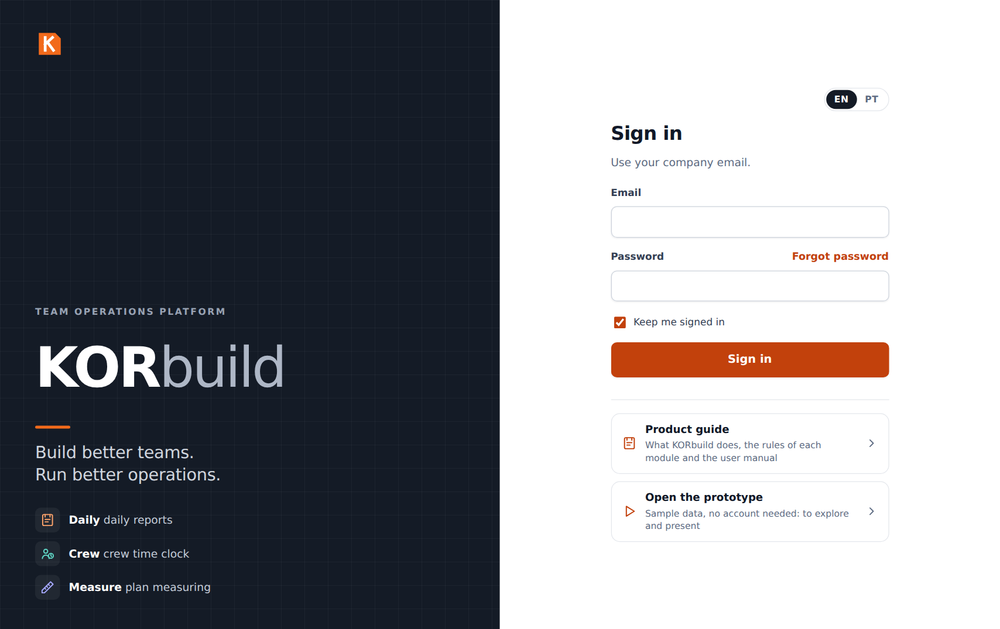
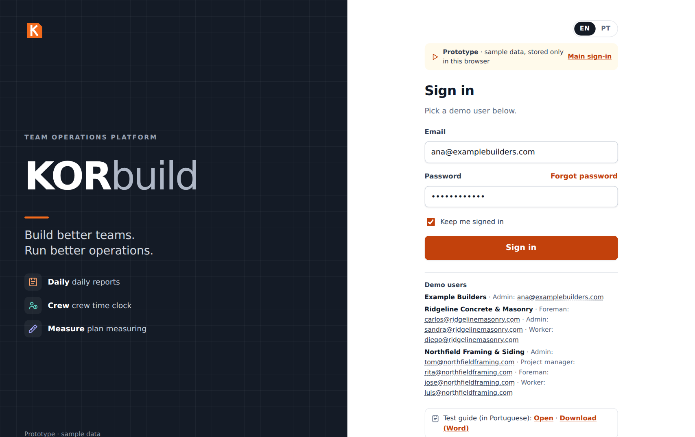
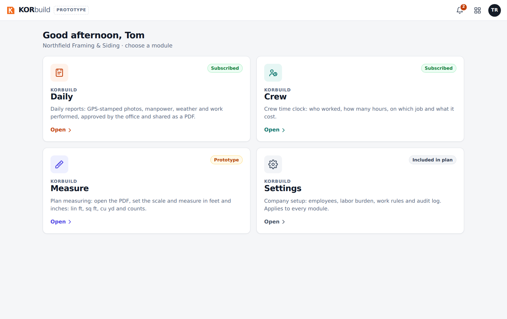
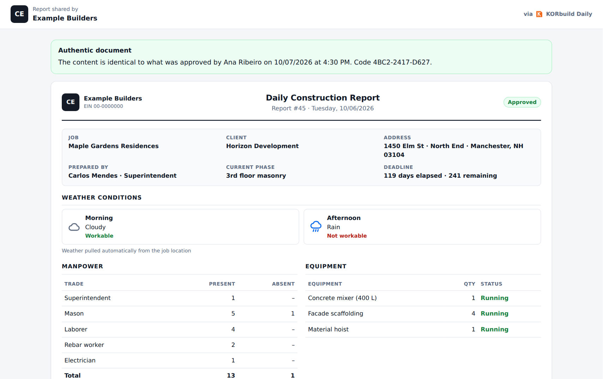

This guide is for the person who will present KORbuild to a customer. You do not need to know the system beforehand: follow the order below, sign in with the users indicated, and use the "what to say" boxes as your script. A presentation of Daily, Crew and Measure takes about 35 minutes; with questions, plan for 50.
The story in one minute
Construction companies in the US run their jobs on paper, text messages and spreadsheets. The superintendent writes the daily report at night (or not at all), the office chases people by phone, and when a client disputes a delay there is no reliable record of what happened on site.
KORbuild is one platform, one set of jobs and people, with modules the company turns on as it needs them:
| Module | In one sentence | Who uses it |
|---|---|---|
| Daily | The daily construction report, filled out on the phone in minutes, approved by the office and shared with the client as a sealed PDF. | Foreman / superintendent (phone), office (computer) |
| Crew | The crew time clock with GPS and geofence, timesheets and labor cost by job. | Foreman (phone), office |
| Measure | Plan takeoff in feet and inches, assemblies, quantities, quote lists and proposals. | Estimators (computer) |
| Settings | Company setup: employees, labor burden, work rules, jobs, contacts, users and roles. | Office administrator |
What to say
"KORbuild replaces the paper daily report, the paper time card and the spreadsheet takeoff with one system. Everything the field does on the phone reaches the office the same day — and works even without signal on the job site."
KORbuild serves both sides of a job: the general contractor (GC), who manages the job, and the subcontractors (subs) who do the work. Each sub keeps its own daily reports, time clock and schedule; the GC approves the reports and sees who is on site and the hours — never what the sub pays its people. A sub can also be a customer on its own, with jobs straight from the owner. Read How KORbuild is organized before the meeting: it takes three minutes.
The prototype has three companies: Example Builders (the GC), Ridgeline Concrete & Masonry and Northfield Framing & Siding (two subs).
Before you start
- Open the prototype link: on the main sign-in page, click Open the prototype. You can also go straight to the prototype address (it ends in
?demo). - Use Chrome or Edge on a computer. If you want to show the field side on a real phone, open the same link on the phone (Chrome on Android, Safari on iPhone).
- Check the language button EN | PT at the top of the sign-in card. The prototype opens in English.
- If someone already played with the prototype in that browser, reset it: user menu (your initials, top right) › Reset demo. Everything comes back to the original sample data.

In the prototype
The prototype keeps all its data in the browser (no server yet). Two consequences: what you do on the phone does not appear on the computer, and two people never see each other's changes. To show the field → GC flow, switch users in the same browser: user menu › Sign out, then sign in with the other user. Customer accounts with a real database are being built; the main sign-in page already shows where they will sign in.
Demo users
There is no password in the prototype: on the sign-in screen, click the email of the user you want and then Sign in.

| User | Company | Role | Use it to show |
|---|---|---|---|
| Ana Ribeiro · ana@examplebuilders.com | Example Builders (GC) | Admin | The general contractor: dashboard of all subs, approvals, jobs with the people on site, client link |
| Carlos Mendes · carlos@ridgelinemasonry.com | Ridgeline (sub) | Foreman | The phone: daily report, crew time clock |
| Diego Santos · diego@ridgelinemasonry.com | Ridgeline (sub) | Worker | A worker who only clocks in and out |
| Sandra Lopes · sandra@ridgelinemasonry.com | Ridgeline (sub) | Admin | The sub's office: timesheets, labor cost, employees, labor burden |
| Tom Reilly · tom@northfieldframing.com | Northfield (sub) | Admin | A sub with every module: Measure, job schedule, pricing, a homeowner job of its own |
| Rita Gomes · rita@northfieldframing.com | Northfield (sub) | Project manager | An estimator |
| José Pereira · jose@northfieldframing.com | Northfield (sub) | Foreman | The second sub's field side |
| Luis Ortega · luis@northfieldframing.com | Northfield (sub) | Worker | A worker of the second sub |
Tip
Before the meeting, open the prototype once on the device you will use. After the first visit it also works offline, which is a strong point to show (see act 3).
The presentation, act by act
Act 1 — One platform, many modules (2 min)
- Sign in as Tom Reilly (Admin of Northfield, a sub with every module).
- Show the modules screen: Daily, Crew, Measure and Settings, each with a short description.

- Mention that a general contractor sees fewer modules: it manages the jobs, so it has Daily (to follow and approve) and Settings, but no time clock or takeoff of its own.
What to say
"Each company turns on the modules it needs. The jobs, people and contacts are entered once and used by every module. The subs do the work and record it; the general contractor follows and approves."
Act 2 — The field: a daily report in minutes (5 min)
Show this on a phone if you can; otherwise, narrow the browser window.
- Sign out and sign in as Carlos Mendes (Foreman at Ridgeline, the concrete and masonry sub). Daily opens on Today.
- Point out the red box (late report), the yellow box (today's report is missing, with the time left until 6 PM) and the request for changes sent by the general contractor.
- Open Maple Gardens Residences and tap or copy from a previous report → choose yesterday → Copy. The crew, the equipment and the activities still in progress come from yesterday.
- Scroll through the report: weather (pulled automatically from the job location), crew (+ and − buttons), equipment, Work performed with Dictate and Improve text, Issues & delays, photos.
- Tap Submit for approval. The report goes to the general contractor, who approves it.

What to say
"The sub's foreman fills out the report at the end of the day, on the phone, in three or four minutes — copying yesterday, adjusting the crew, dictating what was done. Photos get a stamp with the date, time and GPS inside the image. If he forgets, the app reminds him at 4 PM, flags it at 6 PM and tells the general contractor the next morning."
Full details: Daily user manual — Fill out the daily report.
Act 3 — No signal on the job site (1 min)
- In the top bar, tap Online: it switches to offline (this simulates losing signal).
- Submit a report: it stays queued on the phone.
- Tap again to go back online: the report uploads by itself, photo by photo.
What to say
"Job sites often have no signal. Nothing is lost: everything is saved on the phone and uploads as soon as there is a connection."
Act 4 — The general contractor: review, approve and seal (5 min)
- Sign out and sign in as Ana Ribeiro (Example Builders, the GC). Daily opens on the Dashboard: today's numbers, a status light (green, yellow, red) for each subcontractor on each job, and the approval queue with the reports of both subs.
-
Open Jobs › Maple Gardens Residences. Show Subcontractors on this job: Ridgeline and Northfield, who is on site now, since when, and the hours — no dollar amounts. Below, the reports of each sub.

The general contractor's view: each subcontractor with the people on site and the hours -
Open a report from Awaiting approval and click Review.
- Show Request changes from the field: the reason goes back to the sub's foreman. (Cancel it for the demo.)
- Click Approve and seal → confirm. The report gets a verification code and can no longer be changed by anyone.

What to say
"You see at a glance which sub reported today on each job, who is on site and how many hours — without seeing what they pay their people. You approve the subs' reports; approval seals the report with a digital fingerprint: if anyone changes a single word or photo later, the owner's link shows that the document was altered."
Act 5 — The client receives the report (2 min)
- On the approved report, click View as the client (or Copy link for the client).
- Show the green box Authentic document and the full report with the photos.
- Show Download PDF.

What to say
"The client doesn't need an account or an app: just a link. And the link proves the report is exactly what was approved. That's what protects the contractor in a delay claim."
Act 6 — Crew: the time clock and labor cost (6 min)
The time clock belongs to each subcontractor: it clocks in its own people and sees its own labor cost.
-
Sign in as Diego Santos (Worker at Ridgeline). KORbuild opens straight on My time clock: one big button with what fits now.

My time clock: the worker sees only his own time clock -
Sign in as Carlos Mendes (Foreman), open Crew: the Crew time clock. Tap Select all and Clock in (6): the window shows the distance to the job and inside the geofence ✓. Choose the cost code and confirm.

Clocking in the whole crew from one phone -
Show Switch job: travel to the other job is paid time.
- Sign in as Sandra Lopes (Admin at Ridgeline), open Crew: Now shows who is working on each job and the off-site punches to review.
- Open Timesheets, go to the previous week: hours per day, overtime, cost and status. Open Roberto Lima (awaiting approval) and show Edit (a new punch with a reason — the original stays) and Approve week.
-
Open Costs: the Atlantic Tower has spent 34% of the budget and built 31% — KORbuild already shows a projected overrun of about $111k, with a third of the schedule gone.

Labor cost by job, with the forecast to completion
What to say
"The foreman clocks in the whole crew in seconds, with GPS and the job's geofence — no paper card, no buddy punching. The sub's office approves the week and exports it to payroll. And the sub's owner sees, a third of the way into the job, that labor is going to run over — while there is still time to act. The general contractor sees the people and the hours on its job, never the wages."
Full details: Crew user manual.
Act 7 — Measure: from the plan to the proposal (7 min)
Use a computer. Measure belongs to the subcontractor that estimates the work.
- Sign in as Tom Reilly (Northfield), open Measure: the Projects list with clients, bid due dates and status.
- Open Model home and the sheet A-101 · First Floor Plan. The plan fills the screen.
- Click Set scale, choose
1/4" = 1'-0", then check it on the 40'-0" dimension at the top: click both ends, type40'. The toolbar says checked. -
Add assembly › Exterior wall 2x6 @ 16" › name Exterior walls, height
9'-0"› Add to drawing. Click the four corners of the house and press Enter: about 136 lin ft and 1,224 sq ft of wall surface.
Measuring on the first floor plan -
Go back to the project and open Materials and labor: studs, plates, OSB, house wrap, insulation, drywall and the carpenter hours. Click OSB to show the math: wall surface ÷ 32 + 10% waste, rounded up to whole sheets.

Materials and labor, with the math of one item -
Open Material list for quotes: each supplier gets only its items, in purchase units, without prices. Show Send by email and PDF.
- Open Proposal: one line per cost code, priced from the catalog and the markups; type a different amount on a line to show a closed price. View document shows the PDF the client receives.
What to say
"The estimator opens the PDF plans in the browser and measures with the mouse, in feet and inches. One measurement of a wall becomes every material and the labor hours — and every number shows its math. The suppliers get their lists in one click, and the proposal is priced from your own costs and markups. Cost and profit never leave the company."
Full details: Measure user manual.
Act 8 — The other modules (optional)
Detailed scripts for Settings will be added to this guide. Meanwhile, the highlights:
- Measure, more — as Tom: the elevations (siding with the gable, windows and doors deducted, the Opening tool) and the Elm Row Townhouses project, where one unit plan is measured once and counts × 6.
- Job schedule — as Tom, Daily › Jobs › Maple Gardens Residences › Open schedule: Gantt chart, baseline, progress from the daily reports, export to Excel and publish to the GC.
- Settings — as Sandra: employees (with the employer company), hourly rate history, labor burden, work rules, jobs, users and access roles, audit log. As Ana, the general contractor's Settings is lighter: jobs (with their subcontractors), contacts, users and roles.
- A sub on its own — as Tom, Daily › Jobs › Thompson residence: a homeowner job with no general contractor. Here Northfield approves its own reports.
Questions customers ask
| Question | Answer |
|---|---|
| Does it work without internet? | Yes. The app is saved on the phone after the first visit; reports and punches are stored on the phone and upload when there is signal. |
| Do I need to install an app? | Not in the prototype: it runs in the browser and can be added to the home screen. App Store and Google Play versions are planned. |
| Can the foreman change a report after approval? | No. Approval seals it. Changes are requested before approval ("Request changes from the field"). |
| What does the client need? | Nothing: they receive a link and can download the PDF. No account, no cost. |
| Can the general contractor see what a sub pays its people? | No. It sees names, time on site and hours. Wages, labor burden and cost stay with the sub. |
| Do we need a general contractor to use KORbuild? | No. A subcontractor can subscribe on its own and run its jobs directly with the owner. |
| Who approves the sub's daily report? | The general contractor of the job. On a job straight with the owner, the sub approves its own. |
| Can someone fake a photo or a date? | Each photo carries a stamp with date, time and GPS inside the image, plus a digital fingerprint of the original file. The approved report is sealed; any change shows up on the client's link. |
| Does it send SMS or email reminders? | Not yet: reminders go to the in-app notifications (bell) and to the phone's notifications. SMS and email are being evaluated. |
| Where is my data stored? | In the prototype, only in the browser. In the product, on a secure cloud database, separated by company. |
| What does it cost? | Pricing is not part of the prototype. |
To be confirmed
Prices, plans, the release date of the store apps and integrations (payroll, accounting) are commercial decisions still open. Do not commit to them during the presentation.